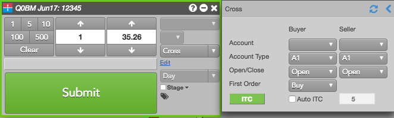

To submit a cross trade:
The Order Ticket window appears.
Note: You can also open an order ticket with a left click on price or quantity in the Market Grid.
When Cross is selected as the Order Type, the additional fields required for submitting the cross are displayed. The Account and TIF fields are cleared, grayed out, and disabled.
A cross order submission sends two orders: Buy and Sell. Click the First Order setting to select which side of the order is submitted first.

The ITC button submits an ITC and starts ticking a timer up. You have to manually send the cross order by clicking Submit on the Order Ticket.
Auto ITC sends an ITC when the you click the ITC button -- this submits the cross order automatically after the 15 seconds ticks down. The ITC button ticks down from the set time and lists the time remaining and Abort. Clicking that button again aborts the cross order submission.
Note: If you plan to use Auto ITC to set your own time interval between the intention to cross and submitting the cross order, contact the exchange or refer to the exchange rules for the correct time interval for your product.
When Auto ITC is checked and the timer is set, clicking the Submit button will send an ITC message with the price and quantity.
The Submit button reverts to ‘Abort (x)' where ‘x' is the number of seconds that count down before order submission. If you click the Abort button during countdown, the countdown stops and the cross order is not submitted. Otherwise, when the countdown completes, the cross order is submitted. For Auto ITC, the total time is managed by the timer (in seconds). For ITC, the default is 15 seconds.
When an intention to cross (ITC) message has been submitted, the ITC button begins to count up the seconds to indicate the time expired since the ITC submission. Starting at 1, the timer counts up a second at a time and will stop when the cross order has been submitted or 120 seconds expire, whichever comes first. The count up feature allows you to wait until the last second to submit a cross order when using the ITC button functionality.